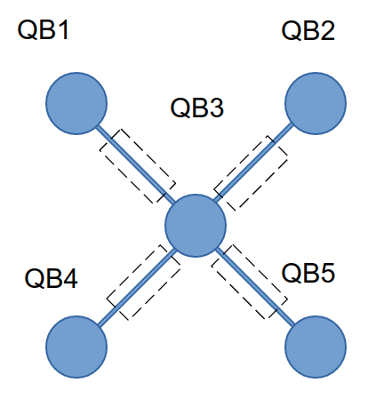

NeIC 2024 Workshop: Quantum Computing 101
In this workshop, we will have a look at the convergence of high-performance computing and quantum computing. Computational modelling is one field that in the future, is expected to be accelerated by quantum computers.
We start with a presentation NeIC project, Nordic-Estonian Quantum Computing e-Infrastructure Quest (NordIQuEst), by Alberto Lanzanova. NordIQuEst is a cross-border collaboration of seven partners from five NeIC member states that will combine several HPC resources and quantum computers into one unified Nordic quantum computing platform.
A practical approach to quantum programming follows this. In order to use quantum computers, in the future, novel quantum algorithms are required. These can, and should! be developed already now. In this part of the workshop, participants will get a chance to submit a quantum job to a real quantum computer. Participants will be shown how to entangle multiple qubits and be given tips on getting the most out of quantum computers today.
This will be followed by an introduction into a hybrid quantum-classical algorithm: the Variational Quantum Eigensolver. This workshop will utilise the EuroHPC supercomputer LUMI and Finland’s 5-qubit quantum computer Helmi.
Prerequisites
For the hands-on tutorials, basic familiarity with Python and some experience working in a Unix environment are desirable. No previous experience with quantum computers expected.
Setup
Participants can follow along with the course notebooks either on their laptop or via the LUMI Web interface.
Locally with your laptop
This workshop can be followed along locally on your laptop.
If you already have a preferred way to manage Python versions and libraries, you can stick to that. If not, we recommend that you install Python3 and all libraries using miniconda a free minimal installer for the package, dependency and environment manager for conda.
Please follow the installation instructions on https://docs.conda.io/en/latest/miniconda.html to install Miniconda3.
Make sure that both Python and conda are correctly installed:
$ python --version
$ # should give something like Python 3.10.13
$ conda --version
$ # should give something like conda 23.7.2
A requirements.txt file is provided which contains all of the python packages to install a local software environment on your computer. Using this a conda environment can be created using the command:
$ conda create --name qc101 -y python=3.12 pip
Which creates a new conda environment with Python 3.10 and pip. You can then activate it and install the python packages:
$ conda activate qc101
$ pip install -r requirements.txt
You can download the requirements.txt here.
Download notebooks
LUMI Web interface
Vist lumi.csc.fi and login using your select identity provider. For this workshop it will most likely be MyAccessID.
Select “Jupyter for Courses”
Use
project_465001055and select the reservationnordiquest. For the working directory use/scratch/project_465001055.
To begin with visit lumi.csc.fi and login using your select identity provider. For this workshop it will most likely be MyAccessID.

Workshop: Quantum Computing 101 Part I
In this workshop, an introduction to quantum computing is given with a practical approach! You will create a quantum program using qiskit and run your first quantum program on a real quantum computer - VTT Q5 Helmi hosted by VTT.
Access to Helmi is given through the Nordiquest platform via LUMI.
Objectives
Run your first quantum job on a real quantum computer!
Learn how to write quantum circuits and quantum algorithms
Learn where quantum computers are at right now, and how to get the most out of them today!
Setup
This notebook uses the following requirements.
qiskit-iqm==13.6
iqm-client==17.5
qiskit[visualization]
matplotlib
pylatexenc
Writing your first Quantum Program
A quantum program consists of a quantum circuit, which is an abstraction model, allowing us to create quantum algorithms by applying single qubit and two qubit quantum logic gates.
We construct, apply and run the quantum circuit on a backend using Python.
First quantum circuit
A basic template of a quantum program is given. It consists of three parts:
Creating and designing the quantum circuit
Running the quantum circuit
Analyzing the results
from qiskit import QuantumCircuit, Aer
from qiskit.visualization import plot_histogram
import numpy as np
qc = QuantumCircuit(1)
qc.x(0) # add a gate to the circuit
qc.measure_all() # add measurement at the end
# run
sim = Aer.get_backend('aer_simulator')
result = sim.run(qc).result() # run circuit, get results
qc.draw(output="mpl", initial_state=True)
# output statistics
counts = result.get_counts() # extract statistics from results
print(counts)
plot_histogram(counts)
A second example
In the first example we showed how to write and run a quantum circuit when the initial state was \(\ket{0}\), flipping the qubit 100% of the time into the \(\ket{1}\) state. What happens if we use some other initial state?
The state \(\ket{\psi_i}\) is a linear combination or superposition of basis qubits.
qc = QuantumCircuit(1)
init_state = [1. / np.sqrt(2), 1. / np.sqrt(2)] # define initial state
qc.initialize(init_state, 0) # initialize qubit 0 to init_state
qc.x(0) # add a gate to the circuit
qc.measure_all() # add measurement at the end
# run
sim = Aer.get_backend('aer_simulator')
result = sim.run(qc).result() # run circuit, get results
# output statistics
counts = result.get_counts() # extract statistics from results
print("\nCounts =", counts)
print()
plot_histogram(counts)
Now we see a distribution between the the states \(\ket{0}\) (represented by 0) and \(\ket{1}\) (represented by 1) were obtained in an almost equal number of cases. The histogram shows the respective probabilities, that is, the relative number of occurrence of each outcome, \(p_i = \frac{N_i}{N}\) where \(N_i\) is the number of outcomes \(i\) and \(N\) is the total number of outcomes.
In the perfect case the results should be exactly \((0.5, 0.5)\). The reason why this is not the case is because the simulator is trying to mimic a realistic quantum machine. An experimental distribution above generally differs from the ideal distribution \((0.5, 0.5)\). We would get closer to the ideal homogeneous distribution \((0.5, 0.5)\) when we increase the number shots. This is the same phenomenon as in any other random experiment like tossing a coin or rolling a die.
Running a quantum program on a real quantum computer
Now that we’ve seen the basics of writing a quantum program, let’s write one for running on a real quantum computer
VTTQ5 - Helmi
Helmi is a 5 qubit Quantum Computer that is co-developed by VTT and IQM. It uses superconducting transmon qubits in a star shaped topology. Helmi’s natives gates consist of the phased-rx and controlled-z gates. This architecture is called Adonis by IQM.
In this tutorial running on Helmi is demonstrated using the Qiskit framework by utilising the qiskit-on-iqm adapter. These notebooks are intended to be run on lumi.csc.fi which has access to run on Helmi. Additional documentation for running on Helmi can be found here.
Here is Helmi! It is located in Espoo, Finland.

Using Helmi with Qiskit
First we import qiskit-on-iqm which is needed to run on Helmi with qiskit. You can read the user guide here.
import matplotlib.pyplot as plt
from iqm.qiskit_iqm import IQMProvider, IQMFakeAdonis
from iqm.iqm_client import IQMClient
import networkx as nx
from qiskit import QuantumCircuit, QuantumRegister, execute, transpile
from qiskit.tools.monitor import job_monitor
from qiskit.visualization import plot_histogram
from qiskit_aer import Aer
from utils import get_calibration_data, plot_metrics
Then connection to the backend is simple! For this we point the IQMProvider at what is called the “cocos URL”. The cocos url to access Helmi is provided below.
Note:
Access to Helmi is only available through LUMI. If you are running this notebook on your laptop, please use the fake_backend instead of Helmi.
provider = IQMProvider("https://qc.vtt.fi/helmi/cocos")
backend_helmi = provider.get_backend()
We also create a backend to an ideal simulator. This acts as a comparison to the real device and will show results if our quantum device was perfect.
backend_sim = Aer.get_backend('aer_simulator')
Additionally, we can define a “noisy” simulator, which is a simulator that we can tune to behave like a real quantum computer.
fake_backend = IQMFakeAdonis()
Now that we have the backend connected to Helmi, let’s print out some information about Helmi!
print(f'Native operations: {backend_helmi.operation_names}')
print(f'Number of qubits: {backend_helmi.num_qubits}')
print(f'Coupling map: {backend_helmi.coupling_map}')
The topology can be visualised with networkx:
G = nx.Graph()
G.add_edges_from(backend_helmi.coupling_map)
node_labels = {node: f"QB{node + 1}" for node in G.nodes}
nx.draw(G, labels=node_labels, node_color='skyblue', node_size=500, font_size=10)
The topology can also be displayed as an image
Constructing and executing quantum circuits
Circuits are constructed and submitted to Helmi using the qiskit library. First we construct a Bell pair circuit between 2 qubits. The circuit is then executed on the backend using the execute function.
A Bell Pair creates an entanglement between the two qubits. Quantum entanglement is one of the reasons quantum computers are more powerful than classical computers at performing certain tasks. In quantum communication, entanglement is seen as resource that enables to carry out protocols that are impossible from classical point of view. In the next session we will see how entanglement allows to teleport a quantum state.
In this example I create the Bell pair
circuit = QuantumCircuit(2, name='Bell pair circuit')
circuit.h(0)
circuit.cx(0, 1)
circuit.measure_all()
circuit.draw(output='mpl')
Executing the circuit on Helmi
Now we have the connection to the backend and constructed the quantum circuit, next all that is needed is to submit the job!
To achieve this we use the execute function and display a histogram of the results. We then directly compare this to the simulator.
The execute function takes the quantum circuit, the backend and the shots as input. shots here means how many times to repeat the execution of the quantum circuit.
job = execute(circuit, backend_helmi, shots=100)
print(f"Job ID: {job.job_id()}.")
print("Tracking execution of job:")
job_monitor(job)
After submitting, the job is now running. The status of the job can be queried using job.status(). Using the job id, you can retrieve previous jobs.
status = job.status()
print(status)
#old_job = backend.retrieve_job(job_id)
Viewing the results
Once the quantum job has completed you can directly view the results.
result = job.result()
print(result.job_id) # The job id can be queried from the result
print(result.get_counts())
#print(result.get_memory())
plot_histogram(result.get_counts())
Task 1 - Run with the simulator
Now, run the same quantum circuit with the backend_sim. What are the two things you notice?
You can also try experimenting by changing the quantum circuit or increasing the number of shots.
Click to reveal
sim_job = execute(circuit, backend_sim, shots=100)
print(f"Job ID: {sim_job.job_id()}.")
print("Tracking execution of job:")
job_monitor(sim_job)
Additional metadata about the executed job can also be found. Note that this additional metadata only exists when running on Helmi.
exp_result = result._get_experiment(circuit)
print("Job ID: ", job.job_id()) # Retrieving the submitted job id
print(result.request.circuits) # Retrieving the circuit request sent
print("Calibration Set ID: ", exp_result.calibration_set_id) # Retrieving the current calibration set id.
print(result.request.qubit_mapping) # Retrieving the qubit mapping
print(result.request.shots) # Retrieving the number of requested shots.
print(exp_result.header)
From this metadata, we can see the calibration_set_id. You can think of the calibration set as a set of settings to operate the quantum computer at. This current calibration set is a snapshot of the most optimal settings for the quantum computer when generated.
The operational settings for the quantum computer will drift in time, therefore, a set of calibration experiments will need to be run, and the calibration set updated.
What did we just do?


Improving the results 1
Now we have run our quantum circuit on a real quantum computer and seen how it differs from an ideal simulator. What can we do to improve the results from the real quantum computer?
Using calibration data
Using the execute function and passing the quantum circuit is a naive implementation. We don’t know which qubits we ran on and some qubits may be performing differently to others. To extract the best results from our algorithm we should look at the calibration data and pick the best qubits.
First we use some utility functions to get the calibration data and plot a particular metric.
from utils import get_calibration_data, plot_metrics
calibration_data = get_calibration_data(backend_helmi.client)
plot_metrics(
metric="fidelity_2qb_cliffords_averaged",
title="Two-qubit Gates Cliffords Averaged",
xlabel="Qubits",
ylabel="Fidelities",
data=calibration_data,
limits=[0.7, 1],
)
plot_metrics(
metric="single_shot_readout_fidelity",
title="Single Shot Readout Fidelities",
xlabel="Qubits",
ylabel="Success rate",
data=calibration_data,
limits=[0.85, 1],
)
plot_metrics(
metric="t1_time",
title="T1 times",
xlabel="Qubits",
ylabel="Time",
data=calibration_data,
)
plot_metrics(
metric="t2_time",
title="T2 times",
xlabel="Qubits",
ylabel="Time",
data=calibration_data,
)
plot_metrics(
metric="t2_echo_time",
title="T2 Echo times",
xlabel="Qubits",
ylabel="Time",
data=calibration_data,
)
plot_metrics(
metric="fidelity_1qb_gates_averaged",
title="Single-qubit Gate Fidelities",
xlabel="Qubits",
ylabel="Fidelities",
data=calibration_data,
limits=[0.95, 1],
)
Now let’s use transpilation to map our quantum circuit to a chosen set of qubits.
qreg = QuantumRegister(2, "QB")
circuit = QuantumCircuit(qreg, name="Bell pair circuit")
circuit.h(qreg[0])
circuit.cx(qreg[0], qreg[1])
circuit.measure_all()
# Qubit numbers start at 0 index whereas the qubit names start at 1 index.
qubit_mapping = {
qreg[0]: 4, # Map the first qubit to QB5
qreg[1]: 2, # Map the second qubit to QB3
}
transpiled_circuit = transpile(circuit, backend=backend_helmi, layout_method="sabre", optimization_level=3, initial_layout=qubit_mapping)
transpiled_circuit.draw("mpl")
job = execute(transpiled_circuit, backend_helmi, shots=100)
print(f"Job ID: {job.job_id()}.")
print("Tracking execution of job:")
job_monitor(job)
result = job.result()
print(result.request.qubit_mapping) # Retrieving the qubit mapping
plot_histogram(result.get_counts())
Using more shots
Additionally, we can just increase the number of repetitions or shots to get a more accurate distribution.
Summary
In this notebook we have demonstrated how to create and run your first quantum circuit using VTT’s Helmi quantum computer. We used Qiskit and qiskit-on-iqm to submit the jobs.
We also explored the limitations of using a real quantum computer compared to an ideal simulator, and how to improve the results.
Access to Helmi persists for the remainder of the event. Below are some exerises and tasks if you want to continue!
Tasks
Here are some tasks to demonstrate usage of Helmi and how to improve the results. Do you notice any differences compared to when you run with the simulator?
Task 1
In this task we create an entangled state on a real quantum computer!
Here is a demonstration of creating a Bell pair (Entanglement!) between qubits 1 and 3. Create an entanglement between the other qubit pairs according to the topology of Helmi! Which are the best qubit pairs today?
# create quantum circuit
qreg = QuantumRegister(2, "QB")
qc = QuantumCircuit(qreg, name='Bell pair circuit')
qc.h(0)
qc.cx(0, 1)
qc.measure_all()
qc.draw('mpl')
# Transpile the circuit
qubit_mapping = {
qreg[0]: 0, # Map the first qubit to QB1
qreg[1]: 2, # Map the second qubit to QB3
}
transpiled_circuit = transpile(qc, backend=backend_helmi, initial_layout=qubit_mapping)
transpiled_circuit.draw('mpl', idle_wires=False)
# Execute the circuit
job = execute(transpiled_circuit, backend_helmi, shots=100)
job_monitor(job)
counts = job.result().get_counts()
print(counts)
plot_histogram(counts)
Task 1 - Solution
def create_bell_pair_circuit(outer_qubit):
"""For a given outer qubit, create a bell pair between the outer qubit and QB3"""
qreg = QuantumRegister(2, "QB")
qc = QuantumCircuit(qreg, name='Bell pair circuit')
qc.h(0)
qc.cx(0, 1)
qc.measure_all()
# Create the qubit mapping
qubit_mapping = {
qreg[0]: outer_qubit,
qreg[1]: 2, # Map the second qubit to QB3
}
# Transpile the circuit with the qubit mapping
transpiled_circuit = transpile(qc, backend=backend_helmi, initial_layout=qubit_mapping)
return transpiled_circuit
outer_qubits = [0, 1, 3, 4] # Qubits 1, 2, 4, 5
bell_pair_circuits = [create_bell_pair_circuit(q) for q in outer_qubits]
# uncomment to draw the circuits
# for circuit in bell_pair_circuits:
# display(circuit.draw('mpl'))
jobs = [execute(qc, backend_helmi, shots=100) for qc in bell_pair_circuits]
for i, job in enumerate(jobs):
job_monitor(job)
counts = job.result().get_counts()
print(f"Counts for outer qubit {outer_qubits[i]}: {counts}")
def success_probability(counts):
total_shots = sum(counts.values())
success_count = counts.get('00', 0) + counts.get('11', 0)
return success_count / total_shots
outcome_order = ['00', '01', '10', '11']
success_probabilities = [success_probability(counts) for counts in [job.result().get_counts() for job in jobs]]
# Plot histograms for counts
plt.figure(figsize=(12, 6))
for i, counts in enumerate([job.result().get_counts() for job in jobs]):
plt.subplot(2, 2, i + 1)
sorted_counts = {outcome: counts.get(outcome, 0) for outcome in outcome_order}
plt.bar(sorted_counts.keys(), sorted_counts.values())
plt.title(f'Counts for outer qubit {outer_qubits[i]+1}')
plt.xlabel('Measurement Outcomes')
plt.ylabel('Counts')
plt.tight_layout()
# Plot histograms for success probabilities
plt.figure(figsize=(12, 6))
plt.bar(outer_qubits, success_probabilities)
plt.title('Success Probabilities for Each Outer Qubit')
plt.xlabel('Outer Qubit')
plt.ylabel('Success Probability')
plt.show()
Task 2 - Entangling more qubits: GHZ
We’ve now seen that we can create a Bell pair circuit where 2 qubits are entangled. What about entangling more than 2 qubits? The Greenberger-Horne-Zeilinger (GHZ) State does precisely this by creating an n-qubit entangled state. Running a GHZ experiment is useful for assessing the multi-qubit interactions in a quantum computer.
Here we demonstrate a 5 qubit GHZ circuit on Helmi.
Creating the GHZ circuit
# create quantum circuit
shots = 1000
qreg = QuantumRegister(5, "QB")
qc = QuantumCircuit(qreg, name='GHZ circuit')
qc.h(0)
qc.cx(0, 1) # apply CNOT, control=0, target=1
qc.cx(1, 2)
qc.cx(2, 3)
qc.cx(3, 4)
qc.measure_all()
qc.draw('mpl')
Let’s see what the simulator gives
from qiskit import Aer
simulator = Aer.get_backend('aer_simulator')
result = simulator.run(qc, shots=shots).result()
counts = result.get_counts() # extract statistics from results
print(counts)
plot_histogram(counts)
In this approach, the circuit is created in a ‘textbook’ fashion. Due to the topology of Helmi, after transpiling the circuit it becomes much longer because SWAP gates are needed.
transpiled_circuit = transpile(qc, backend=backend_helmi, layout_method='sabre', optimization_level=3)
transpiled_circuit.draw('mpl')
This can be shown by only displaying the routed circuit, without decomposition into native gates.
transpiled_circuit_simple = transpile(qc, coupling_map=backend_helmi.coupling_map, layout_method='sabre', optimization_level=3)
transpiled_circuit_simple.draw('mpl')
Let’s run this on Helmi!
job = execute(transpiled_circuit, backend_helmi, shots=1000)
job_monitor(job)
counts = job.result().get_counts()
plot_histogram(counts)
In this case we have an additional swap gates due to the central qubit (QB3) being the only available qubit to make 2 qubit gates.
We can reduce the number of swap gates needed and improve our GHZ 5 result by placing the Hadamard gate on the central qubit and CNOTs on all the neighbours.
# create quantum circuit
qreg = QuantumRegister(5, "QB")
qc = QuantumCircuit(qreg, name='GHZ circuit')
qc.h(2)
qc.cx(2, 0)
qc.cx(2, 1)
qc.cx(2, 3)
qc.cx(2, 4)
qc.measure_all()
qc.draw('mpl')
transpiled_circuit = transpile(qc, backend=backend_helmi, layout_method='sabre', optimization_level=3)
transpiled_circuit.draw('mpl')
Now we run the code on Helmi and look at the histogram.
job = execute(transpiled_circuit, backend_helmi, shots=1000)
job_monitor(job)
counts = job.result().get_counts()
plot_histogram(counts)
Advanced - Using Error Mitigation
Error mitigation is a class of techniques aimed at reducing the error from submitting to the current generation of noisy devices. This exercise demonstrates how to apply simple readout error mitigation to improve the results from our GHZ circuit.
This follows Qiskit’s tutorial: Readout Mitigation, however alternatives such as Mitiq can be used. Mitiq provides an open-source library to learn about and implement error mitigation.
For this brief example, readout error mitigation is applied using the LocalReadoutError mitigator from qiskit.experiments. Readout error mitigation refers to errors related to “reading out” of the quantum state into classical information which occurs during measurement.
With the LocalReadoutError, a \(2^n \times 2^n\) assignment matrix \(A\) is created, containing the probabilities to observe \(y\), given \(x\). That is to say that the individual elements of the matrix will contain the probabilities that a qubit prepared in state \(|0 \rangle\) or \(|1 \rangle\) and was measured in either state \(|0 \rangle\) or \(|1 \rangle\).
Here we demonstrate the LocalReadoutMitigator example, which assumes the readout errors of the qubits are uncorrelated. In this case \(n 2 \times 2\) mitigation matrices are generated, 1 for each qubit.
First we generate 2 circuits for all of Helmi’s qubits. The first circuit has no gates applied with the ideal outcome of all zeros: 00000, the second circuit applied an \(X\) gate to our circuit with the ideal outcome of all ones: 11111. After running the experiment we get the Mitigator which returns the mitigated qasi-probabilities.
from qiskit_experiments.library import LocalReadoutError
qubits = [0, 1, 2, 3, 4]
# The qiskit experiment class generates the "Calibration Circuits" based off the experiment and the qubits input.
exp = LocalReadoutError(qubits)
for c in exp.circuits():
print(c)
The experiment can simple be run. Qiskit’s experiments library takes take of the circuit transpilation and execution in addition to analysis. In this case the above circuits are run and then analysed.
provider = IQMProvider("https://qc.vtt.fi/helmi/cocos")
backend = provider.get_backend()
backend = fake_backend
# from qiskit import Aer
# backend = Aer.get_backend('aer_simulator')
exp.analysis.set_options(plot=True)
result = exp.run(backend)
mitigator = result.analysis_results(0).value
result.figure(0)
Here \(A\) is the assignment matrix, with \(I\) being the identity matrix. The individual components of the assignment matrix represent the probabilities to, for example prepare a \(|0 \rangle\) state and get a \(|1 \rangle\) state or \(|1\rangle\) state and get a \(|0\rangle\) state. This is compared against the identity matrix because in the ideal case we would expect \(P(X|X) = 1\) and \(P(X|Y) = 0\) (\(P(X|X)\) means the probability of \(X\) given \(X\)) The plot shows the absolute value of these two matrices.
The automatic scale given by Qiskit experiments can be slightly misleading, as demonstrated when you run this with the simulator.
The assignment matrix can be printed.
mitigator.assignment_matrix()
print(len(mitigator.assignment_matrix()))
If, for example we used the simulator here the assignment matrix would look like the following:
array([[1., 0., 0., ..., 0., 0., 0.],
[0., 1., 0., ..., 0., 0., 0.],
[0., 0., 1., ..., 0., 0., 0.],
...,
[0., 0., 0., ..., 1., 0., 0.],
[0., 0., 0., ..., 0., 1., 0.],
[0., 0., 0., ..., 0., 0., 1.]])
With the simulator the \(n\) mitigation matrices will look like:
[1. 0.]
[0. 1.]
When using the Qiskit experiment library the analysis is hidden from the user.
Here is the code snippet from Qiskit experiments LocalReadoutErrorAnalysis if you wish to see what it’s doing under the hood.
for m in mitigator._mitigation_mats:
print(m)
print()
print(len(mitigator._mitigation_mats))
Then a circuit can be run on Helmi and our error mitigation applied! In this case we apply the readout error mitigation to the GHZ circuit.
shots = 10000
counts = backend.run(transpiled_circuit, shots=shots).result().get_counts()
unmitigated_probs = {label: count / shots for label, count in counts.items()}
mitigated_quasi_probs = mitigator.quasi_probabilities(counts)
mitigated_probs = (mitigated_quasi_probs.nearest_probability_distribution().binary_probabilities())
legend = ['Mitigated Probabilities', 'Unmitigated Probabilities']
plot_histogram([mitigated_probs, unmitigated_probs], legend=legend, sort="value_desc", bar_labels=False)
We can quickly see how the total success probability has increased by counting the number of all 0’s and all 1’s states.
print((unmitigated_probs['00000']+unmitigated_probs['11111']))
print((mitigated_probs['00000']+mitigated_probs['11111']))
This is just 1 example of error mitigation for mitigating the “Local” (when you assume the readout erros for each qubit are independent) readout error. You could also apply what the Correlated readout error mitigation as described in Qiskit’s tutorial or other forms of error mitigation which are described in Mitiq’s documentation.
Additional Information
This notebook was written for the NeIC Conference 2024, held in Tallinn. It was built using
iqm-client==15.3
qiskit-iqm==11.10
qiskit==0.45.2
qiskit-aer==0.13.2
qiskit-experiments==0.6.0
Author: Jake Muff
Workshop: Quantum Computing 101 Part II
The second part of the workshop will focus on a hybrid quantum algorithm, the variational quantum eigensolver (VQE), giving a general description of how the algorithm works. We will implement the VQE algorithm for the Hydrogen molecule \(H_2\).
The \(H_2\) system is one of the smallest systems one can imagine to begin using VQE with. The \(H_2\) molecule is so small that it can be solved analytically and also extremely fast on your laptop.
For this notebook, we will be following the work reported in O’Malley etal 2015, Scalable Quantum Simulation of Molecular Energies, arXiv:1512.06860v2. The following figure given in the article summarizes the entire setup:

Fig. 1. The variational quantum eigensolver circuit and hardware. Source: arXiv:1512.06860v2.
The right part of the figure describes our “qubit Hamiltonian” of \(H_2\). The top part of the figure describes the physical pulses with timings.
VQE - In a nutshell
Prepare some quantum state using a so-called variational form (ansatz)
Gates in the ansatz have free parameters
For each value of the parameters the resulting state has some mean energy
Find the ground state variationally, that is, minimising over the parameters
Source: Algorithmiq
The variational principle:
Firstly we will write our quantum circuit:
Prepare our initial state
Create and applying our parametrized ansatz using parameterized gates
Measure our expectation values
Then we apply our classic part which consists of
Calculating the energy
Using a classical optimizer to suggest new parameters \(\theta\).
We will do this first for the simulator to see how the algorithm works, and then run a simplified version on the real quantum computer.
Let’s first import some libraries and setup the backend connection
from qiskit import QuantumCircuit, execute
from qiskit import QuantumRegister, ClassicalRegister
from qiskit.circuit import Parameter
from qiskit.compiler import transpile
from qiskit.visualization import plot_histogram
from qiskit_aer import Aer
import matplotlib.pyplot as plt
import numpy as np
from iqm.qiskit_iqm import IQMProvider, IQMFakeAdonis
# provider = IQMProvider("https://qc.vtt.fi/helmi/cocos")
# backend_helmi = provider.get_backend()
backend_sim = Aer.get_backend('aer_simulator')
fake_backend = IQMFakeAdonis()
def create_ansatz_circuit(qreg, creg, parameter):
"""
Create H2 ansatz circuit given in O'Malley etal 2015.
args
qreg - qubits
creg - classical bits
parameter - parameter for parameterized circuit
returns
ansatz_circuit - a parameterized circuit
"""
ansatz_circuit = QuantumCircuit(qreg, creg)
# H2 circuit
# 1 - create HF reference state
ansatz_circuit.rx(np.pi, qreg[0])
ansatz_circuit.barrier()
# 2 - ansatz: U(theta)
ansatz_circuit.rx(-np.pi / 2, qreg[0])
ansatz_circuit.ry(np.pi / 2, qreg[1])
# 3
ansatz_circuit.cx(qreg[1], qreg[0])
# 4 - parameterized Z-rotation
ansatz_circuit.rz(parameter, qreg[0])
# 5
ansatz_circuit.cx(qreg[1], qreg[0])
# 6
ansatz_circuit.rx(np.pi / 2, qreg[0])
ansatz_circuit.ry(-np.pi / 2, qreg[1])
ansatz_circuit.barrier()
return ansatz_circuit
theta = Parameter('θ')
q = QuantumRegister(2)
c = ClassicalRegister(2)
ansatz_circuit = create_ansatz_circuit(q, c, theta)
ansatz_circuit.draw("mpl")

Barriers are added for visualization purposes.
One of the new features added here is the \(R_z\) gate with parameter \(\theta\). This is a parametrized gate. Using this gate, this means that we only need to update the parameter \(\theta\) and do not need to re-create the whole circuit, saving time. This becomes a problem when you have large circuits.
Now we have:
The prepared initial state
The applied parameterized anzatz circuit
Now we need to measure the expectation values. However this is not straight forward.
Measure expectation values
The qubit Hamiltonian we need to measure is as follows
where \(g_i\) are (real valued) coefficients that have been computed classically. They are given in the Table 1 in the appendix of O’Malley etal 2015. The values of \(g_i\) are functions of hydrogen-hydrogen bond length \(R\). We will take the coefficients at bond length \(R = 0.75\) (in units \(10^{-10}\) m) where the energy is lowest (the actual bond length where the energy is lowest is \(0.74\), which is close).
Measurements are performed using the \(Z\) basis through the Qiskit function measure(). This means that we cannot directly measure the Pauli \(X\) or \(Y\) operators for \(X_0 X_1\) and \(Y_0 Y_1\). In order to measure the latter, we have to use the following trick:
to measure \(X\), perform basis transformation from the \(X\) and \(Z\)
then measure the qubits as usual (in the \(Z\) basis) with
measure().
The same applies to \(Y\) measurements, in this case we need to perform basis transformation from \(Y\) to \(Z\).
In order to compute the average value \(\langle H \rangle\) of the (total) Hamiltonian we will use the fact that the total average is equal to the sum of averages of its terms,
So we need to compute the expectation value of each term, then multiply each with the respective coefficient \(g_i\), and finally add averages of all terms. Note that \(\langle\mathbb{1}\rangle = 1\), so we can just add the coefficient \(g_0\).
def paulis_to_measure_circ(qreg, creg, hamlist):
"""
Generate measure circuits from hamiltonian pauli list
for measurements in different bases.
args
qreg - qubits
creg - classical bits
hamlist - total hamiltonian, i.e. pauli strings
returns
circuits - list of circuits that can be used to average over
"""
circuits = []
for elem in hamlist:
minicirc = QuantumCircuit(qreg, creg)
for qubitno, qubitop in elem:
if qubitop == 'Z':
pass
elif qubitop == 'X':
minicirc.h(qreg[qubitno])
elif qubitop == 'Y':
minicirc.sdg(qreg[qubitno])
minicirc.h(qreg[qubitno])
else:
assert False, "Error: INVALID qubit operation"
minicirc.measure(qreg, creg)
circuits.append(minicirc)
return circuits
theta = Parameter('θ')
q = QuantumRegister(2)
c = ClassicalRegister(2)
hamiltonian = (((0, "Z"),),
((1, "Z"),),
((0, "Z"), (1, "Z")),
((0, "X"), (1, "X")),
((0, "Y"), (1, "Y")))
ham_mini_circuits = paulis_to_measure_circ(q, c, hamiltonian)
# print result
[display(circ.draw("mpl")) for circ in ham_mini_circuits]

[None, None, None, None, None]
This function takes the qubit Hamiltonian and creates the corresponding circuits. The smallest element has the form (qubit_number, Pauli_matrix), where qubit_number is the index of the qubit for the Pauli observable.
Let’s summarize the computation of the average of the Hamiltonian. We need to compute the averages of terms. We do this by looping over terms, which are represented as mini-circuits. For each mini-circuit, we will take the ansatz, add to it the mini-circuit, and run the resulting circuit, collect measurement statistics and compute the average.
Scan the parameter interval
We will not bother with classical optimization in this small implementation. The circuit has only one parameter—the angle \(\theta\) of the \(R_z\) rotation—which ranges between \([-\pi, \pi]\). Instead of searching for the minimum value of \(\langle H\rangle\), we will scan this interval and record the minimum energy.
Let us add a loop to do this.
def get_paulistr_avg(counts, obs, shots):
"""
Calculate average of a Pauli string (e.g. IX, XX or YY).
args
counts - result of simulation: {'00': 45, '01': 34, . . .}
obs - data for calculating probabilities
shots - number of repetitions
returns
avg - the average value
"""
avg = 0
for c in counts:
for k, v in c.items():
avg += obs[k] * (v / shots)
return avg
def get_ham_avg(theta, theta_range, ansatz, coeffs, ham_mini_circuits, obs, shots, backend):
"""
Compute average of the total qubit Hamiltonian.
args
params - parameter value for the ansatz circuit
ansatz - ansatz circuit
ham_mini_ciruits - pre-built circuits to measure Hamiltonian terms
obs - data for observables
shots - number of shots
returns
avg - average of Hamiltonian
"""
avg = 0
for coeff, measure_circuit, obsval in zip(coeffs, ham_mini_circuits, obs):
total_circuit = ansatz.compose(measure_circuit)
qc_transpiled = transpile(total_circuit, backend=backend, layout_method='sabre', optimization_level=3)
circuits = [qc_transpiled.assign_parameters({theta: n}) for n in theta_range]
job = execute(circuits, backend, shots=shots)
print(f"Submitted job ID: {job.job_id()}.")
counts = job.result().get_counts()
paulistring_avg = get_paulistr_avg(counts, obsval, shots)
avg += coeff * paulistring_avg
return avg
shots = 1000
num_points = 40
param_range = np.arange(-np.pi, np.pi, np.pi / num_points)
# record min val of hamiltonian
h_min = 100
# g_i coeffs for R = 0.75
# Source: Table I https://arxiv.org/pdf/1512.06860
g_coeff = [0.3435, -0.4347, 0.5716, 0.091, 0.091]
g_coeff_id = 0.2252
graph = []
obs = []
for x in param_range:
h_avg = get_ham_avg(theta, param_range, ansatz_circuit, g_coeff, ham_mini_circuits, obs, shots, backend_sim)
print(h_avg)
# h_avg += g_coeff_id # add coeff of id term
# graph.append(h_avg) # collect data for plotting
# if h_avg < h_min: # record min value
# h_min = h_avg
# result
# print("\nH_min =", h_min)
print()
0
0
0
0
0
0
0
0
0
0
0
0
0
0
0
0
0
0
0
0
0
0
0
0
0
0
0
0
0
0
0
0
0
0
0
0
0
0
0
0
0
0
0
0
0
0
0
0
0
0
0
0
0
0
0
0
0
0
0
0
0
0
0
0
0
0
0
0
0
0
0
0
0
0
0
0
0
0
0
0
Here we loop through the interval defined in the parameter range, \([-\pi, \pi]\) and find the minimum energy. A value of \(0.2252\) or \(g_0\) is calculated as this code doesn’t yet implement the averaging. We don’t do any classical optimization here in this simple example but in principle we could add it here.
Mapping outcome states to values
To actually compute the average of a Hamiltonian term, we need to know how the outcomes of the measurement \(00, 01, 10, 11\) that Qiskit uses correspond to the actual real valued outcomes \(+1, -1\) for a particular observable like \(Z_0\) or \(Z_0 Z_1\) we measure. Without discussing this at length here, we are going to introduce dictionaries that record the mapping for each observable. Of course, there are other ways to implement this.
# map outcome states to outcome values
obs = [{'00': 1, '10': 1, '01': -1, '11': -1}, # 1 x Z
{'00': 1, '10': -1, '01': 1, '11': -1}, # Z x 1
{'00': 1, '10': -1, '01': -1, '11': 1}, # Z x Z
{'00': 1, '10': -1, '01': -1, '11': 1}, # Y x Y
{'00': 1, '10': -1, '01': -1, '11': 1}] # X x X
ansatz_circuit = create_ansatz_circuit(q, c, theta)
ham_mini_circuits = paulis_to_measure_circ(q, c, hamiltonian)
h_avg = get_ham_avg(theta, param_range, ansatz_circuit, g_coeff, ham_mini_circuits, obs, shots, backend_sim)
print(h_avg)
# scan theta domain [-pi, pi]
# for x in param_range:
# h_avg += g_coeff_id # add coeff of id term
# graph.append(h_avg) # collect data for plotting
# if h_avg < h_min: # record min value
# h_min = h_avg
# print("\nH_min =", h_min)
Submitted job ID: 1ae76011-9adb-42ad-b480-427ff6f2716c.
Submitted job ID: 0295dbc3-0bfe-43a8-bce3-2dd40b35d5ff.
Submitted job ID: e8ff1f6b-b88d-4577-b417-98c5973d6d50.
Submitted job ID: b109bb78-28aa-4610-a6f7-a3b17fb6c00d.
Submitted job ID: d438f5fe-0e79-4d36-8303-5c12354ee49e.
-45.786435000000004
The function to get the hamiltonian average iterates over all of the mini circuits we created before. Each mini circuit is combined with the ansatz circuit, running it, collecting the statistics and computing the average for the term.
Also implemented is the function to calculate the Pauli string average energy.
Running this code brings us a result that is close to the one obtained in the paper. It can be compared with Figure 3 with a Bond angle \(R = 0.75\).
Using a pre-built function
from qiskit_algorithms.optimizers import COBYLA
from qiskit.primitives import Estimator
from qiskit.quantum_info import SparsePauliOp
estimator = Estimator(options={"shots": 1000})
theta = Parameter('θ')
q = QuantumRegister(2)
c = ClassicalRegister(2)
ansatz_circuit = create_ansatz_circuit(q, c, theta)
optimizer = COBYLA(maxiter=1000)
ansatz_circuit.draw("mpl")
H2_op = SparsePauliOp.from_list(
[
("II", 0.2252),
("IZ", 0.3435),
("ZI", -0.4347),
("ZZ", 0.5716),
("XX", 0.091),
("YY", 0.091),
]
)
from qiskit_algorithms import VQE
vqe = VQE(estimator, ansatz_circuit, optimizer)
result = vqe.compute_minimum_eigenvalue(H2_op)
print(result)